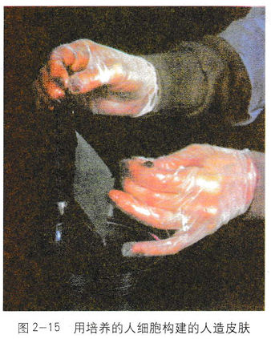
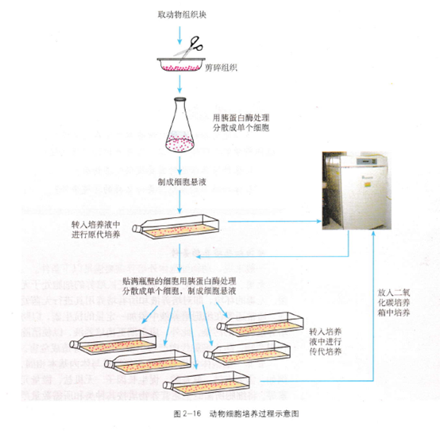

2.3 动物细胞培养和核移植技术
在治疗烧伤病人时，通常采用的方法是取烧伤病人的健康皮肤进行自体移植。但对一个大面积烧伤的病人来说，自体健康皮肤非常有限，使用他人皮肤来源不足，而且会产生排异反应。那么，怎样才能获得大量的自体健康皮肤呢?
许多动物的细胞能够分泌蛋自质，如抗体等。但是，单个细胞产生的蛋白质量是很少的，怎样才能获得大量的分泌蛋白呢?
细胞工程中的动物细胞培养技术为解决这些问题找到了出路（图2-15）。

动物细胞培养
动物细胞培养(animal cell culture)就是从动物机体中取出相关的组织，将它分散成单个细胞，然后，放在适宜的培养基中，让这些细胞生长和增殖。那么，动物细胞培养的过程是怎样的?培养时又需要提供哪些必要的条件呢?
动物细胞培养的过程
成块的组织中细胞与细胞靠在一起，彼此限制了细胞的生长和增殖，因此，进行细胞培养时(图2-16)，首先将组织分散成许多单个细胞。方法是从健康动物体内取出组织块，剪碎，用胰蛋白酶或胶原蛋白酶处理一段时间，这样组织就会分散成单个细胞。然后，用培养液将分散的细胞稀释制成细胞悬液，再将细胞悬液放入培养瓶内，置于适宜环境中培养。悬液中分散的细胞很快就贴附在瓶壁上，称为细胞贴壁。培养贴附性细胞时，细胞要能够贴附于底物上才能生长增殖(图2-17)，这就要求培养瓶或培养皿的内表面光滑、无毒，易于贴附。以后，细胞进行有丝分裂，数量不断增多，当贴壁细胞分裂生长到表面相互接触时，细胞就会停止分裂增殖，这种现象称为细胞的接触抑制。人们通常将动物组织消化后的初次培养称为原代培养。
贴满瓶壁的细胞需要重新用胰蛋白酶等处理，然后分瓶继续培养，让细胞继续增殖。这样的培养过程通常被称为传代培养。传代培养的细胞一般传至10代后就不易传下去了。一般来说，细胞在传至10~50代左右时，增殖会逐渐缓慢，以至于完全停止，这时部分细胞的细胞核型可能会发生变化。当继续传代培养时，少部分细胞会克服细胞寿命的自然极限，获得不死性，这些细胞已经发生了突变，正在朝着等同于癌细胞的方向发展。目前使用的或冷冻保存的正常细胞通常为10代以内，以保持细胞正常的二倍体核型。
△寻根问底：
胰蛋白酶真的不会把细胞消化掉吗？
？旁栏问题：
进行动物细胞传代培养时用胰蛋白酶分散细胞，说明细胞间的物质主要是什么成分？用胃蛋白酶行吗？

小知识
1957年，科学家采用胰蛋白酶消
化处理和应用液体培养基的方法，获得单层细胞培养。单层培养法的出现，对细胞培养的发展起了很大的推动作用。此后单层细胞培养成为细胞培养普遍应用的技术。